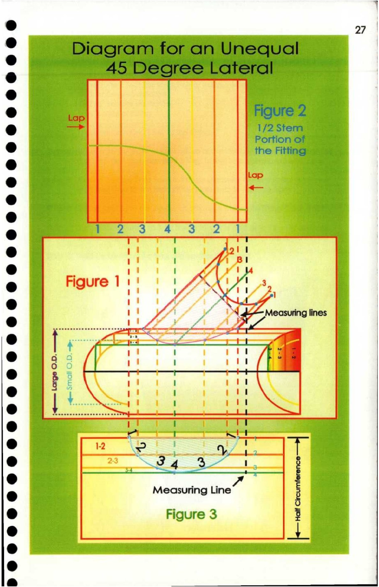

27. Diagram for an Unequal 45 Degree Lateral

4
e 97 |
@ |
e |
e |
@ af
e Al 3 x 3 a Lt t —s |
e@ 1 I ~A2ii
1 1 /) Bl
® 1 A NY
1 ' \.@>—Measuring lines |
e Ss 1 \1 /fi a
o 0 f ’ /H | |
— SS SSS (li
a4 3- Le
* e
e Measuring Line :
e Figure 3 | 3
® | ar
e
@
ry